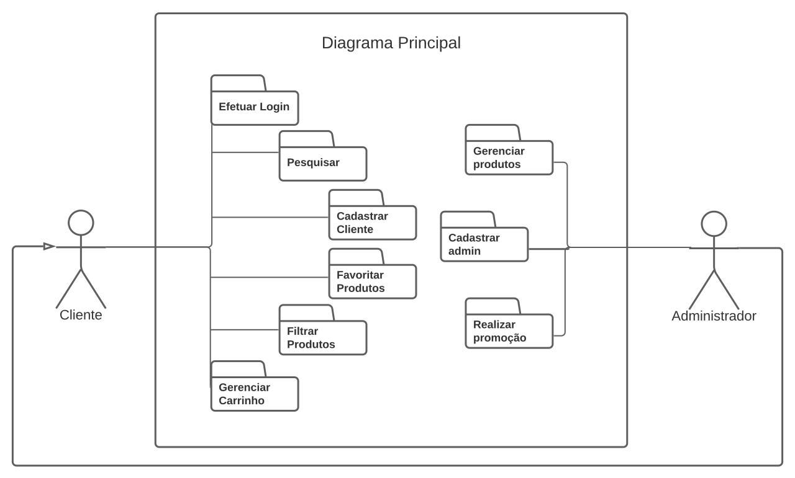

Diagrama de caso de uso

Gerenciamento de ações da Unidade de saúde
- Cadastrar Paciente (CSU00)
- Realizar vacinação (CSU01)
- Cadastrar vacina. (A unidade de saúde poderá cadastrar novas vacinas presentes na unidade)
- Remover Vacina. (A unidade de saúde poderá remover vacinas do estoque)
- Gerar extrato de controle de estoque de vacinas. ( A unidade de saúde poderá solicitar ao sistema a geração do extrato de controle de vacinas)
- Configurar calendário vacinal. (A unidade de saúde é capaz de gerenciar seu próprio calendário de vacinação)
- Agendar campanha de vacinação(CSU04)
- Sincronizar campanha de vacinação. (Ao agendar alguma campanha, a unidade de saúde ou a prefeitura pedem sincronizar a uma mesma campanha de vacinação)
Gerencimento de ações do Paciente
- Consultar carteira de vacinação. (O paciente poderá consultar sua carteira de vacinação no sistema)
- Agendar vacinação (CSU02)
- Comprovante de vacinação. (O paciente pode retirar o comprovante de vacinação no sistema)
- Registrar efeitos colaterais da vacina(CSU03)
- Visualizar calendário de vacinas agendadas. (O paciente pode consultar o calendário de vacinas agendadas)
- Receber notificações. (O usuário recebe notificações de vacinas agendadas e pendentes)
- Receber notificações de vacinas agendadas. (O usuário recebe notificações de vacinas agendadas)
- Receber notificações de vacinas pendentes. (O usuário recebe notificações de vacinas pendentes)
Gerenciamento de ações da Prefeitura
- Sincronizar com o calendário de vacinação do SBIm. (A prefeitura poderá sincronizar o calendário de vacinação com a SBIm)
- Definir agendamento de vacinação por grupos prioritários. (A prefeitura poderá agendar a vacinação por grupos prioritários)